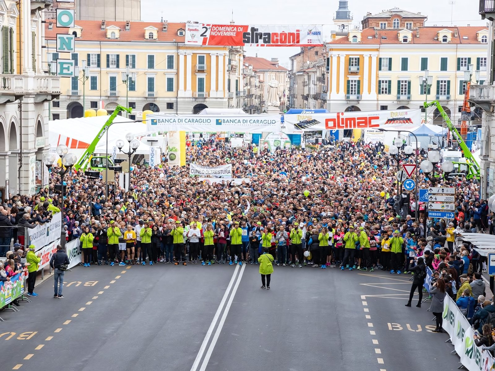
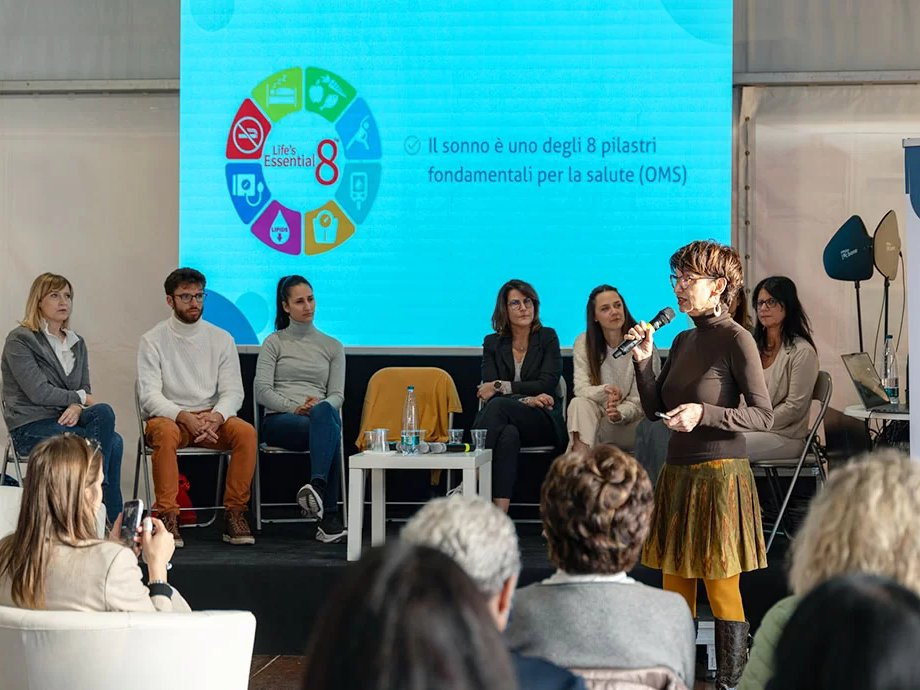

L'agenzia Involucra ha curato il Villaggio della Salute, un'area tematica della Stracôni di Cuneo, nata nel 2023 dalla collaborazione tra Stracôni e Lilium Spazio Medico e articolata su tre giorni con diversi panel di esperti a tema salute e benessere.
Genitori e figli nell'era dei social: un incontro pubblico con le psicoterapeute di Spazio Ascolto, in cui ho rappresentato l'agenzia marketing Involucra portando il punto di vista della comunicazione digitale, intervenendo come relatrice ed esperta di digitale.
Key Activities
- Intervento come relatrice ed esperta di digitale
- Supporto logistica evento
- Supporto comunicazione
- Public speaking
Galleria

